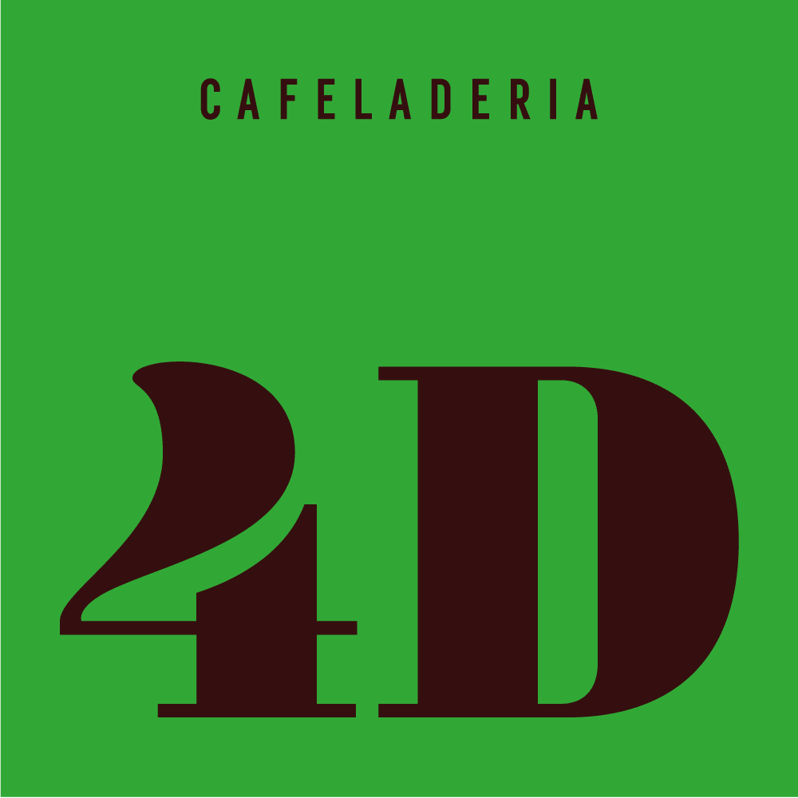

ALANYA REPOSTERIA
ALANYA REPOSTERIA
Esta es una de mis cafeterías favoritas. La pizza de la casa es un must, además las bebidas no son muy caras. Los postres de vitrina están entre 20-27 soles; sin embargo, en lo personal, vale totalmente la pena. Eso sí, si vas en fin de semana lo mas probable es que te toque esperar entre 10-20 minutos por una mesa libre.
RUTINA CAFE
RUTINA CAFE
La primera cafetería en la que probé el famoso cookie-croissant, estuvo bueno, relleno de chocolate, pero para mí apto solo para gente que le gusta el chocolate . Sus postres son muy buenos, recomiendo el crumble de manzana. A pesar de de tener un precio un poco elevado, se tiene que considerar el ambiente que te brinda, un espacio tranquilo para conversar.
CABINA CAFE
CABINA CAFE
Los panqueques son muy ricos, esponjos en su punto, si vas también recomiendo el chocolate caliente. Lo malo de esta cafetería son sus asientos que son a la altura de la mesa, generando incomodidad.
NAPOLI GELATO

NAPOLI GELATO
Si estás siguiendo un régimen con tu comida, y estás limitando los postres, este lugar es para ti, puedes comer rico y saludable, además cuentan con diversas opciones veganas. Los helados son muy naturales y se puede notar en su sabor, mi recomendación el sabor de dragon fruit.
HELADERÍA 4D

CAFELADERIA 4D
Esta es una de mis heladerías favoritas, sus helados pueden tener costos un poco altos, si mal no recuerdo 16soles la bola de helado, no obstante, el precio igual al sabor. Mi recomendación, el helado de brownie, a diferencia de otras heladerías acá sí puedes sentir el brownie.
GUSTOZZI
GUSTOZZI
Aquí encuentras las que para mí serían las equivalentes a las famosas crumbl cookies en Perú sus galletas están entre 7-8 soles, están hechas para personas que disfrutan el chocolate. Sus porciones de torta también son buenas, en especial la de chocolate. Si estás en la tienda también te recomiendo probar sus brownies, su especialidad en lo que a mí me parece.
LA TIENDECITA BLANCA
LA TIENDECITA BLANCA
Su bollería es deliciosa, a pesar de solo ir una vez, la recomendaría totalmente. Sus tostadas francesas tienen un acaramelado que le da el toque. Queda pendiente probar el schnitzel que ofrecene como opción de almuerzo, y si no sabes que es el schnitzel es una especie de milanesa, también es un plato de alemania pero acá ofrecen la versión suiza me parece.